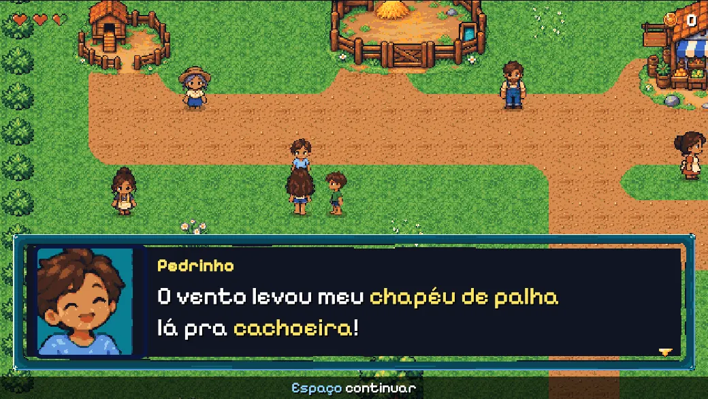
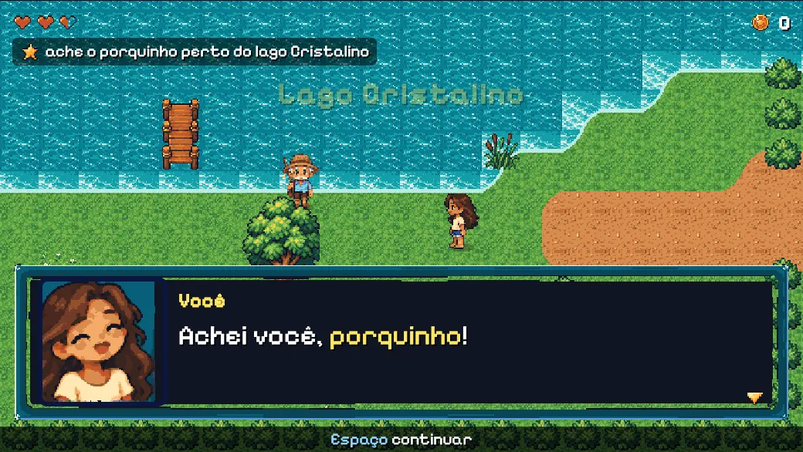
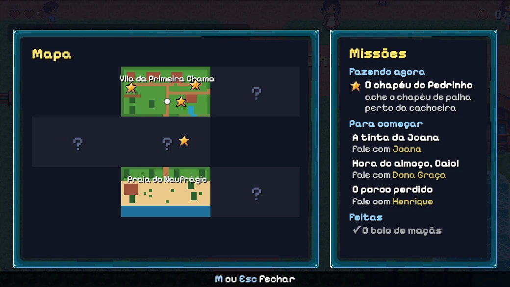
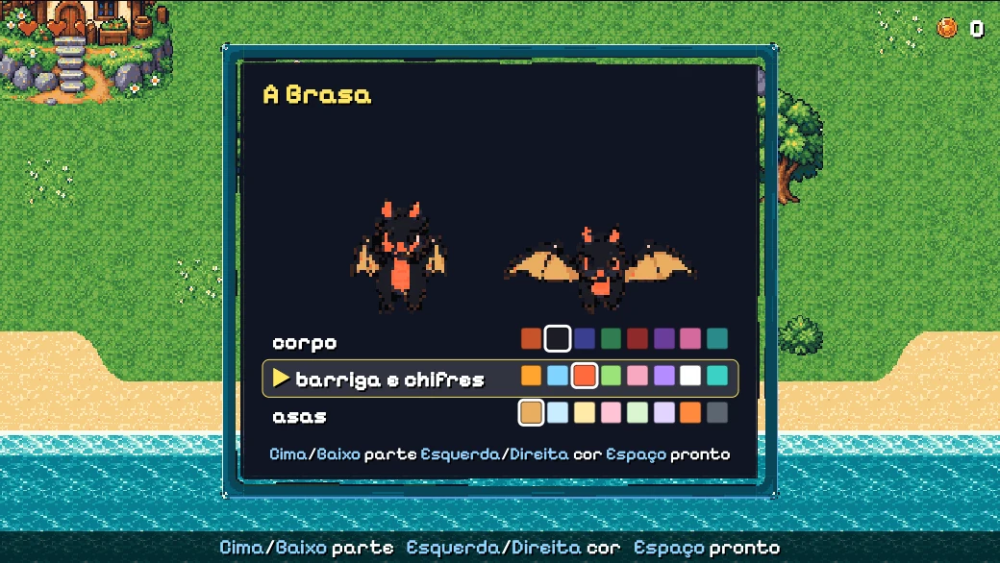

1O que é um jogo?
Um jogo é uma brincadeira com regras, um objetivo e escolhas. Pega-pega também é assim!
O que pode e o que não pode.
Na neve, sem casaco, a menina das Três Ilhas escorrega de volta: está frio demais para subir.
Aonde você quer chegar.
No Dragão, cuidar do ovo até ele chocar. Nas Três Ilhas, ajudar a vila que te acolheu.
Você decide o que fazer primeiro.
Voar até a praia ou ir à vila? Ajudar a pastora ou o vovô? Cada um joga de um jeito.
2O que é uma missão?
Uma missão é um pedido com começo, meio e fim. Alguém pede uma coisa, você faz uns passos e ganha um prêmio. Toda missão tem as mesmas peças, e cada peça tem uma cor:
A pessoa (ou o bicho) que precisa de ajuda.
a coruja
Uma coisa para pegar, levar ou fazer, com o número.
2 frutas
Aonde ir, ou onde a coisa nasce.
a vila
Moedas, um coração, uma roupa, um enfeite.
cobertorzinho
Às vezes, depois da missão, alguma coisa fica diferente para sempre.
3 ovos por vez
3Diagrama de estados
Um estado é como a missão está agora. A gente desenha cada estado como uma bolinha. Uma seta diz o que precisa acontecer para pular de uma bolinha para a outra. Só uma bolinha fica acesa de cada vez.
Agora as missões de verdade. Clique numa bolinha para ver o jogo naquele estado.
4Sistema de eventos
Um evento é o jogo gritando "aconteceu!". Quem estiver ouvindo faz a sua parte: tocar um som, mostrar um aviso, contar um passo da missão. Quem grita não precisa saber quem está ouvindo.
"Você tem 2 frutas na mochila." É como as coisas estão agora. Dá para olhar a qualquer hora.
"Você acabou de pegar uma fruta!" Acontece uma vez, e quem estava ouvindo reage.
5Como funcionam os adventures
Um adventure (aventura) é um jogo de explorar e resolver. Ele é montado com cinco peças:
Onde a história acontece.
A caverna da Mila, a vila, a torre, o pico nevado, a praia. Nas Três Ilhas, a vila e a caverna das montanhas.
Quem mora lá, conversa e pede ajuda.
A coruja, a pastora, o vovô, a tia. A dona Maria, que cuida do galinheiro; o Marcel, que cuida das vacas.
Coisas para pegar, guardar na mochila e dar.
Fruta, peixe, cenoura, cogumelo, trigo, milho. E coisas que viram outras na panela.
Um lugar que só abre depois de alguma coisa.
A vila do planalto: só dá para chegar voando. A neve: só sobe quem tem casaco. Uma missão que só aparece depois de outra.
Um jeito de descobrir sem ninguém contar tudo.
O mapa do tesouro com um X. O aviso na cerca do galinheiro. As pistas da coruja até o orbe da água.
6O jogo por dentro
Este é o mapa das missões: cada caixinha é uma missão, uma pessoa, um lugar ou um item, e as setas mostram quem pede o quê. Dá para clicar, abrir cada missão e até mudar o jogo.
Abra o mapa das missões desta página: o jogo por dentro (exemplo).
★O mesmo jogo, desenhado em 2D
As Três Ilhas também ganharam um desenho em 2D, visto de cima, como os jogos antigos de videogame. As missões são os mesmos arquivos: a mesma pessoa pede, os mesmos passos, o mesmo prêmio. Só o desenho mudou. É por isso que vale escrever as missões como dados!




Como foi feito (para os adultos): jogo 2D e pixel art.
7Agora desenhe a sua missão
Imprima esta folha ou copie no papel. Use lápis de cor: cada peça tem a sua cor.
pessoalugaritem receitaprêmioestado o mundo mudou
Minha missão:
Desenhe as bolinhas (os estados) e escreva em cada seta quando ela acontece:
- Toda seta tem um verbo ou uma condição: "colher 3", "levar", "se tiver 3", "de noite".
- Ainda não tem? Desenhe uma seta de volta para a mesma bolinha.
- Escreva NOVO em tudo que o jogo ainda não tem (um bicho, um item, uma receita).
- Mostre para um adulto e conte a missão em voz alta. O que faltou no papel vira pergunta.